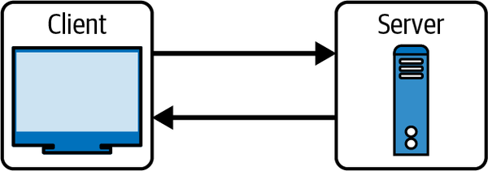
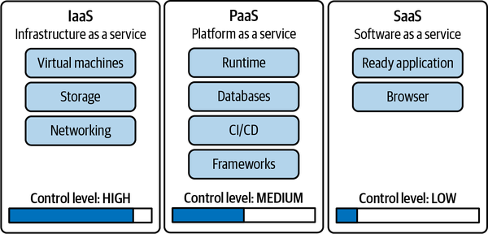

This chapter takes you through the fundamentals behind cloud computing: what it is, where it came from, how it works, and why it matters.
Along the way, we highlight why businesses of all sizes are leaning into the cloud. Some of the benefits include lower costs, faster innovation, global reach, and the ability to scale up or down as needed. These aren’t just buzzwords. They’re real advantages that help teams move quicker and respond to change without getting bogged down in infrastructure headaches.
Regarding the exam, you’ll be asked to distinguish between deployment models like public, private, and hybrid cloud, and to understand the differences between service models such as IaaS, PaaS, and SaaS. You’ll also see questions that assess your grasp of the core benefits of cloud computing—like high availability, pay-as-you-go pricing, and global scalability. By understanding both the “what” and the “why” of cloud computing, you’ll be better equipped to answer scenario-based questions that test real-world applications of these ideas.
The phrase “cloud computing” has been hyped, marketed, rebranded, and stretched to fit all kinds of products and services. Depending on who you ask, it might mean anything from streaming movies on Netflix to running entire companies’ infrastructure. This kind of broad usage can make the definition slippery. So, to ground the idea, let’s start with how AWS defines it:
“Cloud computing is the on-demand delivery of IT resources over the Internet with pay-as-you-go pricing. Instead of buying, owning, and maintaining physical data centers and servers, you can access technology services, such as computing power, storage, and databases, on an as-needed basis from a cloud provider like Amazon Web Services (AWS).”
This is a solid foundation. In plain terms, cloud computing lets you rent computing resources instead of buying them. Think of it like electricity. You don’t run your own power plant. Rather, you plug in and pay for what you use. The cloud works the same way. Need a server for an hour? Fire one up, run your job, and shut it down. Done. No hardware to rack. No maintenance team. No upfront capital expense.
This model changes the game, especially for businesses that want to stay nimble. Startups can launch products without sinking cash into infrastructure. Enterprises can scale up for traffic spikes—say for the holiday seasons—without overprovisioning. And everyone benefits from faster deployment, more flexibility, and the ability to focus on building rather than babysitting servers.
Of course, there’s more to it, but at its core, cloud computing is about turning IT into a utility. You use what you need, when you need it, and leave the rest to someone else.
Cloud computing emerged in the 1990s, bolstered by the arrival of the World Wide Web. It became possible for users to interact with software and services through a browser. Companies like Amazon and eBay built entire businesses around this model.
In 1999, Salesforce took the next step by launching a fully online customer relationship management (CRM) system. Instead of selling software that businesses had to install and manage, Salesforce delivered it entirely over the web. This SaaS model made it clear that cloud-based apps could be easier to use, cheaper to maintain, and faster to scale.
The real inflection point came in the early 2000s whenAmazon launched AWS. At first, it was a quiet rollout. It involved a few services, such as for storage and hosting web applications. But those offerings gave developers something they’d never had before: the ability to rent storage and computing power by the hour, without buying any hardware. This model would soon reshape how businesses of every size think about infrastructure.
At its heart, cloud computing builds on the familiar client-server model. A client (usually a browser or app) makes a request, and a server processes it and sends back the response, as you can see in Figure 3-1.

This architecture is what powers nearly everything we do online, from loading a website to spinning up virtual machines (VMs) in a data center thousands of miles away.
So while cloud computing feels like a recent development, it’s really the product of decades of evolution.
When it comes to defining a cloud strategy, organizations need to weigh several factors, including which parts of their application stack they’re moving, how they prefer to manage resources, and what kind of IT infrastructure they already have in place.
There are three primary cloud deployment models to work with: cloud-based, on-premises, and hybrid. Each comes with its own trade-offs and strengths.
In a cloud-based setup, everything lives in the cloud—compute, storage, networking, databases, the whole stack. This model works well for new applications built specifically for the cloud, but many teams also migrate legacy apps into this environment. You can choose between low-level infrastructure like VMs (more control, more effort) or higher-level services like managed databases and serverless functions that abstract away the nitty-gritty.
Example: A tech startup might spin up web servers on AWS EC2, store files in Amazon S3, and use RDS for its backend database—all without needing a physical data center.
If your organization hosts everything in its own data center, you’re in on-prem territory. This is also called a private cloud when it uses virtualization and cloud-style management tools. This model gives you maximum control over hardware, security, and compliance, which can be crucial in industries like finance or healthcare.
Example: A hospital might run its patient management system on local servers using VMware to virtualize the infrastructure, keeping sensitive data within its firewall for privacy and compliance.
Hybrid cloud blends the two. It lets you keep part of your infrastructure on-premises while extending other parts into the cloud. This model is especially useful when you have legacy systems that can’t move easily, or when regulations require certain data to stay in-house. Hybrid setups offer flexibility and scalability while maintaining control where you need it.
Example: A retail company might run its customer-facing website and analytics in the cloud but keep its inventory and point-of-sale systems on-prem for performance and data privacy reasons.
Choosing the right model depends on a mix of technical and business needs:
How sensitive is your data? Are there legal or industry rules you must follow?
Do your workloads spike seasonally or need rapid scaling?
What’s your budget, and how much flexibility do you need with spending?
What do you already have, and can it integrate with cloud services?
Many companies end up with a hybrid model, as it gives them the best of both worlds. You can scale quickly when needed, keep critical data close, and gradually modernize your systems without ripping everything out at once. The key is to match your deployment model to your specific goals.
Depending on what you need—whether it’s raw computing power, a ready-to-go development environment, or an application that works out of the box—you’ll interact with the cloud in different ways. Broadly speaking, those ways fall into three buckets: IaaS, PaaS, and SaaS. Let’s break them down.
If you’re looking for the cloud equivalent of renting a data center, infrastructure as a service (IaaS) is your model. It gives you access to the nuts and bolts of computing—VMs, storage, and networking—without asking you to manage physical servers.
You pay for what you use, and you get full control over the environment. This means you can choose your OS, install the software you need, and configure the systems how you like. It’s a good fit for developers, systems administrators, or anyone who wants maximum flexibility without the hassle of maintaining hardware.
Typical use cases:
Running older, on-premises applications in the cloud
Hosting VMs
Spinning up development and test environments on demand
Why teams like IaaS:
Full control over systems and software
Easy to scale up or down services, such as EC2 and S3
With the platform as a service model, you don’t think about infrastructure at all. The platform gives you everything you need to build and deploy software—runtime, databases, frameworks, and continuous integration and continuous delivery or deployment (CI/CD) tools—without touching the underlying servers.
This model is a sweet spot for developers who want to move fast. You focus on writing code, and the platform handles the rest, like provisioning, scaling, and patching.
Typical use cases:
Building web or mobile applications
Working with microservices
Creating and managing APIs
Why developers like PaaS:
No server management required
Speeds up the release cycle
Built-in tools for scaling and automation
This is the model you’ve probably used the most, even if you didn’t know the name. Software as a service applications are fully built, fully managed, and ready to use in your browser. Some examples include Gmail, Dropbox, or Microsoft 365. You sign in, and you’re good to go.
With SaaS, the provider handles software, updates, and security. You just use the app. It’s a good choice for businesses and individuals who want tools that work without the overhead.
Typical use cases:
CRM platforms
Project and task management tools
Why SaaS is so popular:
No setup or maintenance required
Users always have access to the latest version
Each of these models serves a different purpose, and the best choice depends on what you’re trying to build or run as well as security considerations. If you just need software, go with SaaS. If you want to build software without worrying about infrastructure, PaaS is a good choice. And if you want total control, IaaS puts you in the driver’s seat.
Figure 3-2 shows the key aspects of these three cloud models.

Since the 1990s, individuals and businesses have been transitioning from using independent, isolated computer systems to a cloud model, where infrastructure, platforms, and software are shared. This transition is still ongoing; many businesses are still making the change. There are several obvious advantages that the cloud offers:
Buying servers and building out data centers used to be the norm. It was expensive, slow, and locked up a lot of cash. Cloud services like Amazon EC2 flipped that script. Now, you only pay for what you use, when you use it. It’s like trading a giant upfront bill for a flexible monthly tab, and the services scale with you.
Keeping physical infrastructure up and running takes lots of time, money, and expertise. Power, cooling, repairs—it all adds up. Cloud providers take care of all this grunt work. So instead of patching servers, your team can spend their time building better apps and delivering real value to customers.
High availability means your systems stay up and running, even when something goes wrong. In the cloud, providers build in safeguards like backup systems, failover setups, and tools that automatically recover from failures. These layers of protection help prevent downtime. If you rely on applications that just can’t go offline—like online stores, healthcare platforms, or financial systems—high availability is what keeps everything moving smoothly without interruptions.
Planning for peak traffic is tough. Overprovision, and you waste money. Underprovision, and performance takes a hit. The cloud solves this with elasticity, which is the ability to automatically scale resources up or down based on demand. AWS services like Auto Scaling and AWS Lambda support this.
Big cloud providers buy in serious volume, which adds up to thousands and thousands of servers and massive bandwidth. This buying power means lower costs per unit, and those savings get passed down to you. It’s hard to match that kind of efficiency when you’re operating your own infrastructure.
Setting up new servers used to take days or even weeks. In the cloud, it’s minutes, if not seconds. Need to run code without thinking about infrastructure at all? Services like AWS Lambda let you do just that. You can test, tweak, and ship features faster, which means more room for experimentation and innovation.
Want to serve customers in Tokyo, London, and São Paulo—all at once? With the cloud, you can spin up resources across the world in just a few clicks. Providers like AWS have data centers in many regions across the globe, so you can keep latency low and performance high, no matter where your users are.
In this chapter, we looked at the building blocks of cloud computing, starting with how it evolved into today’s powerful platforms like AWS. We also unpacked the different deployment models—public, private, and hybrid—as well as the core service models like IaaS, PaaS, and SaaS.
We then looked into why businesses are so drawn to the cloud, such as the lower costs, easier scaling, global reach, and the kind of agility that helps teams move fast without getting stuck in infrastructure overhead. Put together, these ideas give you a solid foundation for understanding how cloud computing helps organizations stay nimble, innovate quickly, and handle whatever the digital world throws their way.
To check your answers, please refer to the “Chapter 3 Answer Key”.
Which cloud deployment model involves an organization hosting everything in its own data center, often using virtualization and cloud-style management tools?
Public cloud
Private cloud
Hybrid cloud
Blended cloud
When choosing a cloud deployment model, what factor is critical if an organization’s workloads spike seasonally or need rapid scaling?
Existing infrastructure that cannot integrate with cloud services
Strict data sovereignty laws requiring all data to remain on-premises
Scalability
A fixed budget with no flexibility for variable spending
What is a key advantage of the software as a service (SaaS) model for businesses and individuals?
It offers complete control over the underlying hardware and operating system.
No setup or maintenance is required by the user, and they always have the latest version.
It requires users to perform their own software updates and security patches.
It is primarily designed for developers to build custom applications.
Which cloud deployment model is described as offering flexibility and scalability while maintaining control where needed, often useful for legacy systems or specific regulatory requirements?
Public cloud
Private cloud
SaaS cloud
Hybrid cloud
What does “high availability” mean in the context of cloud computing?
Ensuring that applications can only run in a single Availability Zone
Reducing costs by eliminating redundancy in infrastructure
Designing systems to remain operational with minimal downtime
Using larger instance types to handle failures